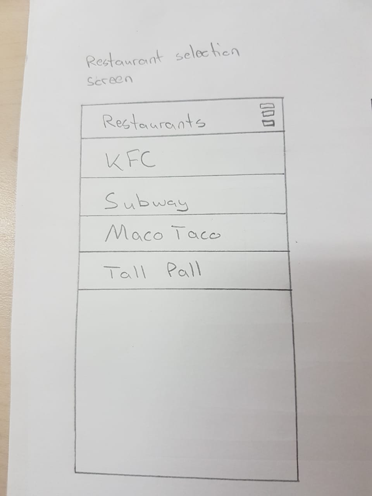
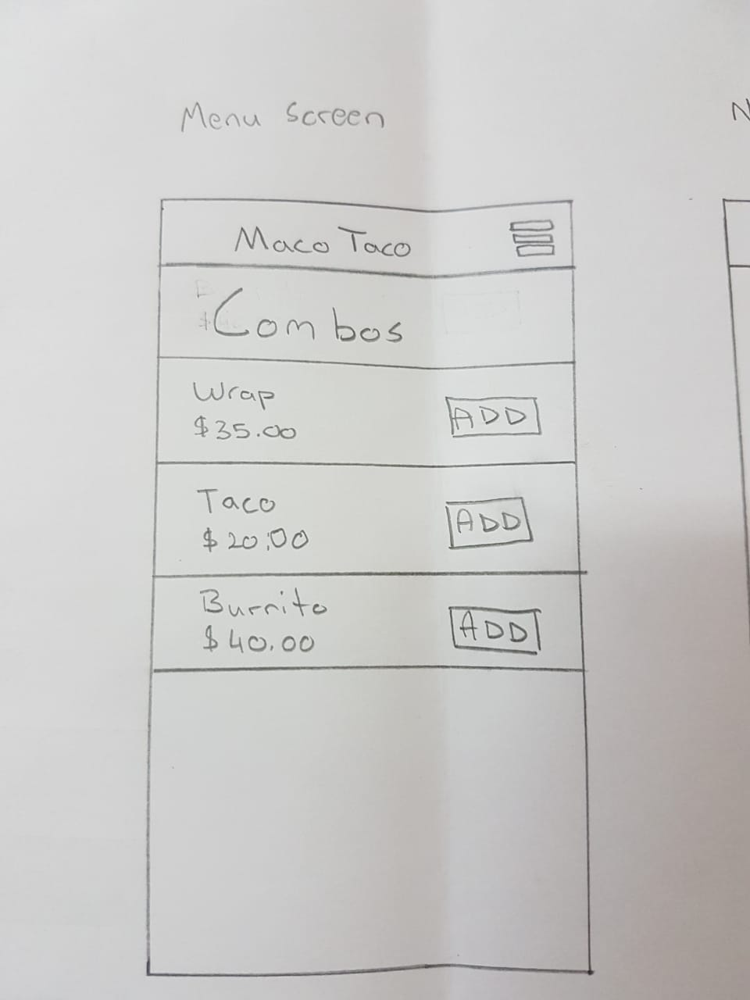
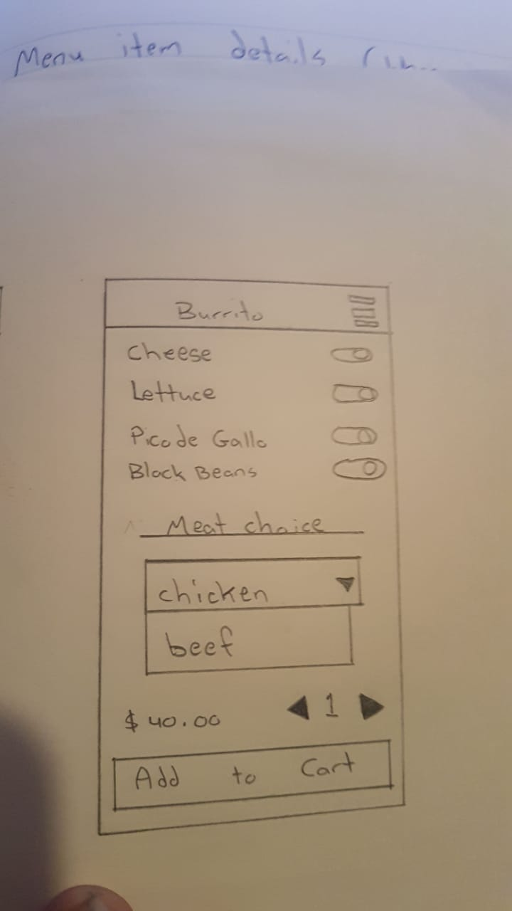
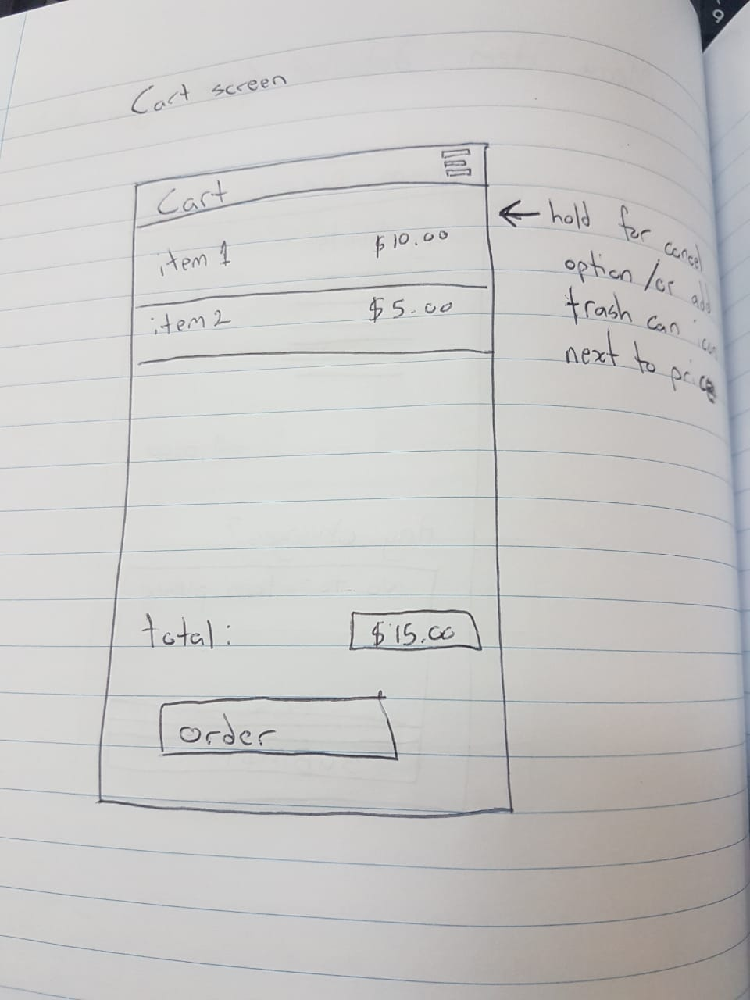
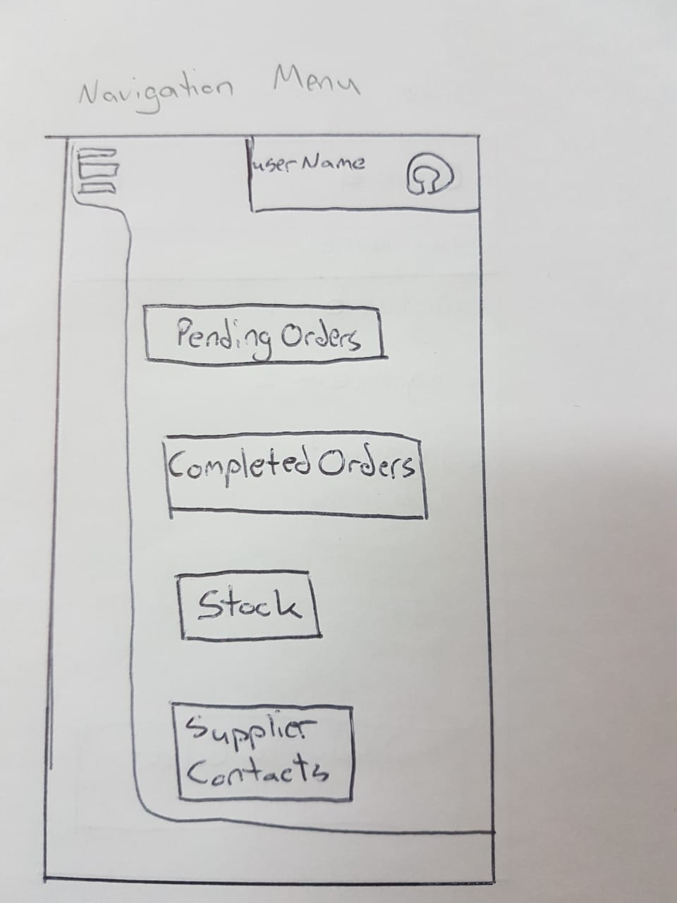
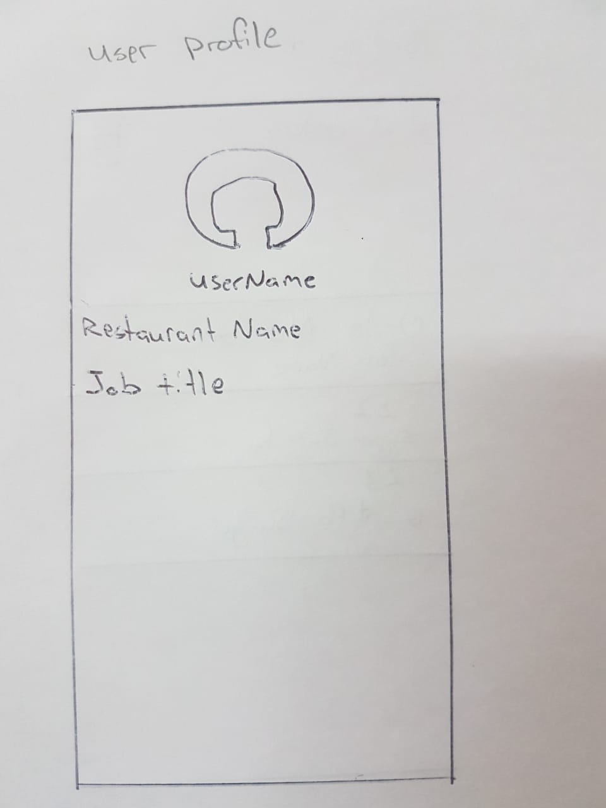
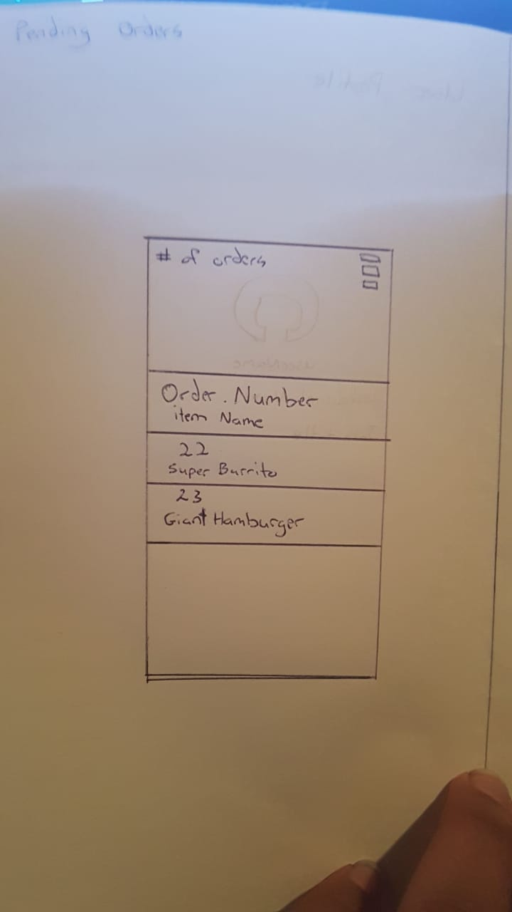
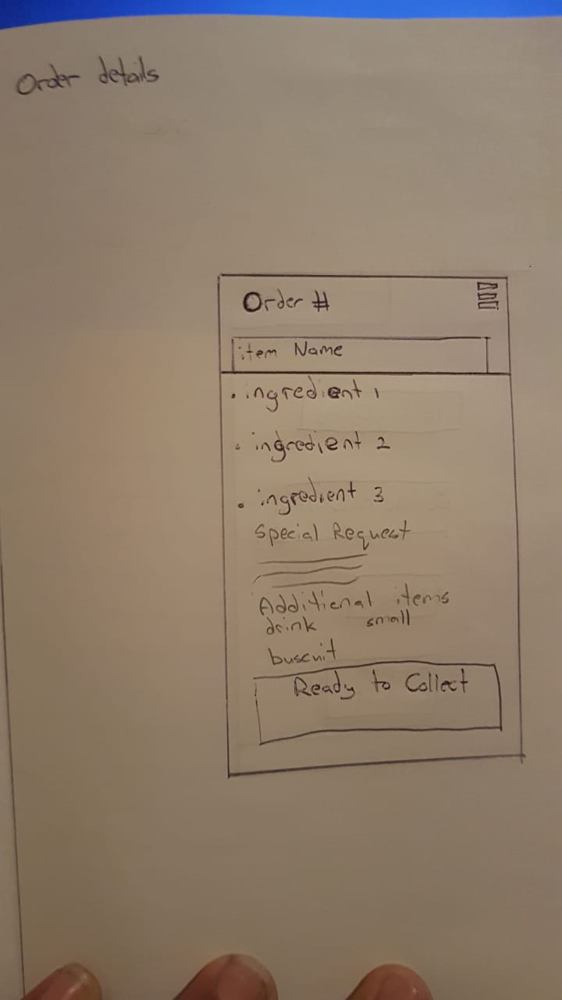
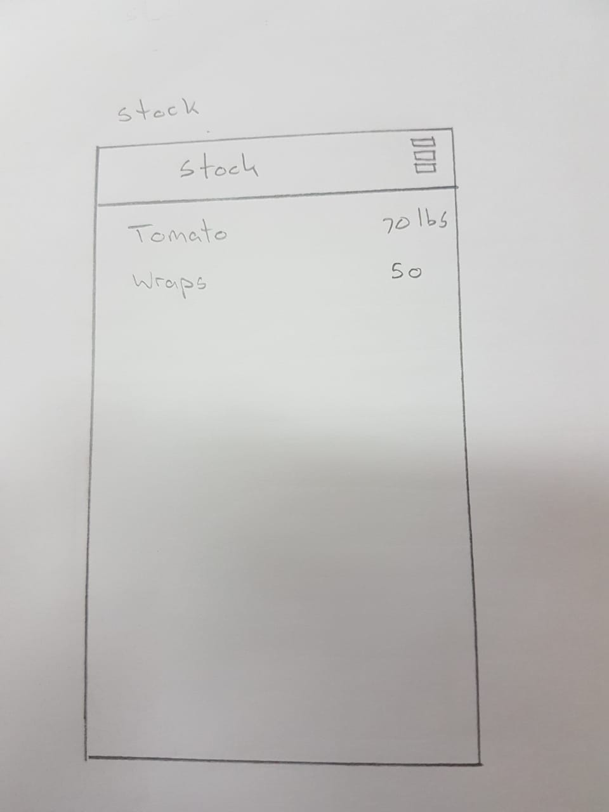

In order to get complete feedback this method was also done with both of the main types of user, the student/customer and the food outlet owner. This would also give each user the ability to see and interact with a prototyped version of the system and identify any improvements that can be made.
A student was given a drawn example of the system’s interface and the following suggestions were made:
• Add back buttons to the top of each screen
• There should be markers to indicate whether a menu item is available or not
• The ability to cancel an order should be in the form of an x next to the item in the cart
• Each item on the menu should have a picture for users to see what they are ordering
A prototype of the system’s interface was also presented to the operator of Maco Taco in order for her suggestions and reactions to be recorded as follows:
• Add an “Accept order button” for operators to accept/deny orders as they come in the event that an order cannot be fulfilled.
• Addition of Menu customization tab for creating/editing of menus.
• In the pending orders screen the menu item should be larger than the order number.
• A button should be added to indicate that preparation of an order has begun.
Customer screens
   Food place screens
    